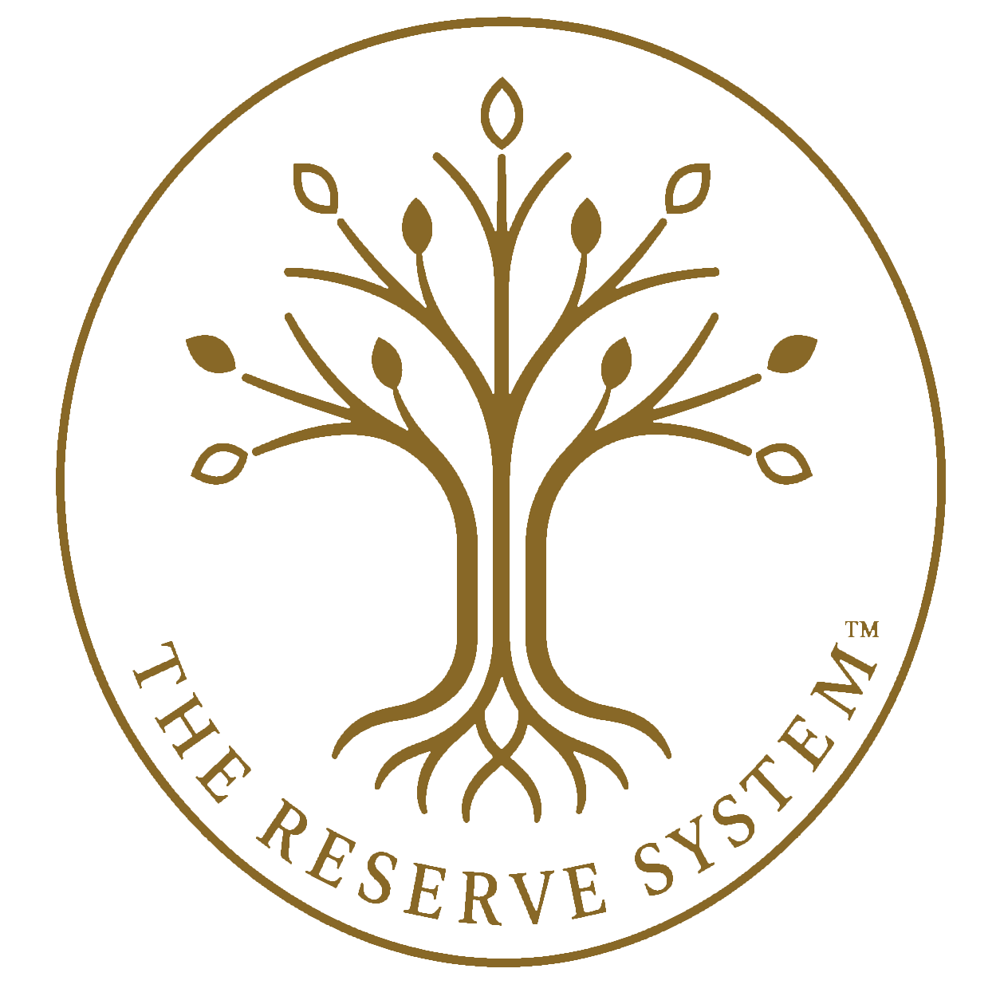
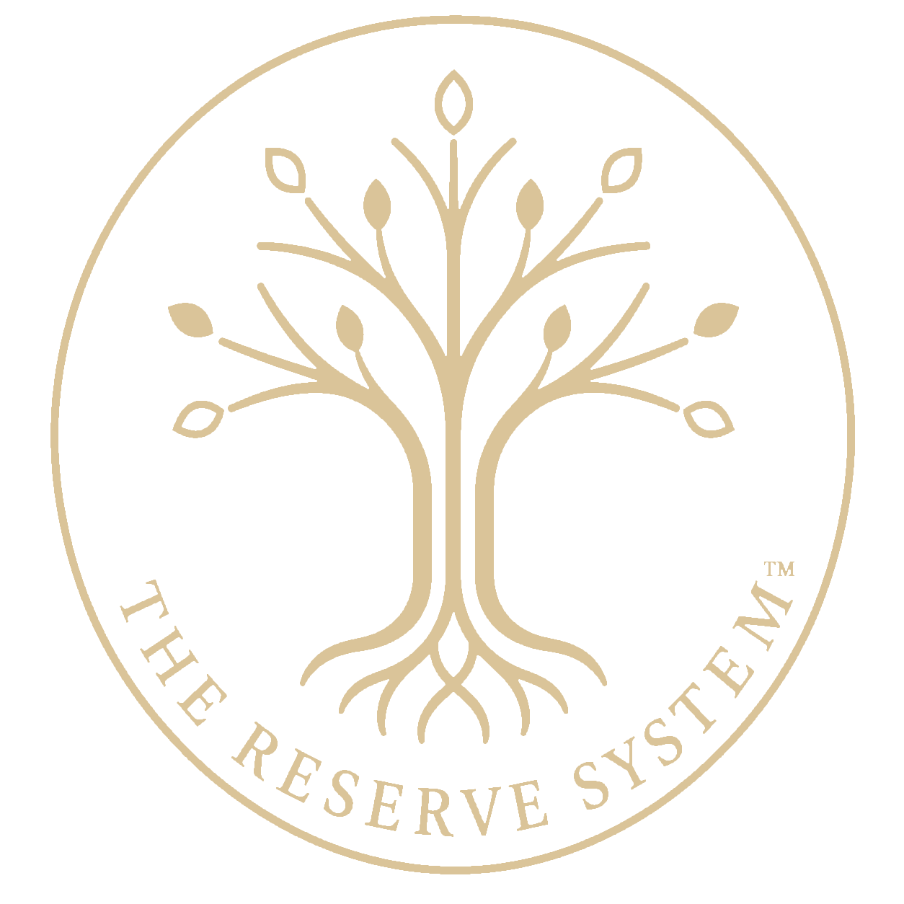

THE RESERVE SYSTEM
THE RESERVE SYSTEMHow the practice works
What ongoing care looks like, how often we meet, what gets measured, and how decisions get sequenced.

The Longevity Clinic
The Longevity Clinic is where the Reserve System gets applied to one person, continuously, across years. If you are weighing whether that is your next step, start with a conversation.
Twenty minutes with Tammy, who manages the practice.
Not a medical appointment. No obligation.
The Reserve System is not a protocol you buy once. It is a way of reading capacity, load and reserve across years, so that direction becomes visible before an event makes it obvious.
In practice that means the same measurements tracked over time, read in sequence rather than one visit at a time, and decisions made in order—foundation before stabilization, stabilization before precision.
What ongoing care looks like, how often we meet, what gets measured, and how decisions get sequenced.
What is covered, what is not, and how this differs from an annual physical or a one-off panel.
Tammy will give you real numbers on the call. Pricing should not be something you have to ask for three times.
The practice can only accept patients where Dr. Jarbou is licensed. Tammy will confirm whether your state is eligible.
Readers who have taken the Reserve System Score and are considering whether ongoing care built on the same framework makes sense for them.

Tammy will walk you through how the practice works and whether we are the right fit. About twenty minutes. If we are not a fit, she will say so.
This conversation is about our practice. It is not a medical appointment, and we will not review your health information on the call.
Not ready to talk? The Before Your Next Visit checklist is free, and it works whether you ever become a patient here or not.
Medical Disclaimer: The Reserve System Score and related materials are educational and do not replace individualized medical advice, diagnosis, or treatment. A website score does not create a physician-patient relationship. Decisions about testing, prevention, medications, supplements, or treatment should be made with a qualified healthcare professional who understands your medical history and goals. Booking a conversation about the practice does not create a physician-patient relationship, and the conversation does not include medical advice, diagnosis, or treatment.